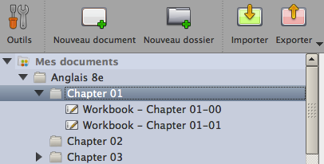

Il est possible d’utiliser un clic long sur la gomme dans la barre d’outils pour disposer de 4 options :

NB : Le clic long sur la gomme utilisée sur la surface du tableau permet d'avoir le même résultat qu'avec un clic long sur la gomme dans la barre d’outil.